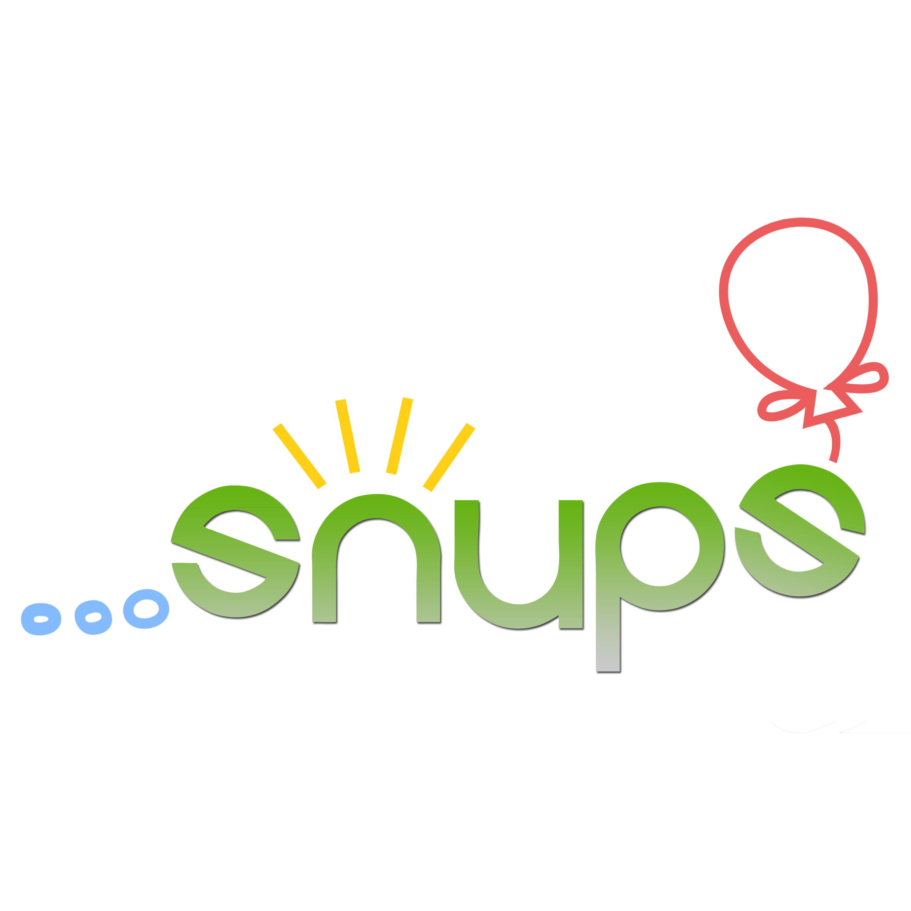

서울대학교 알고리즘 문제 해결 동아리 SNUPS
SNUPS(스눕스)는 ACM-ICPC를 비롯한 각종 프로그래밍 대회를 준비하며 컴퓨터 공학의 한 분야인 문제해결 및 알고리즘을 공부하고 연구하는 학회 성격의 동아리 입니다. 1년에 한두차례 모의 대회를 열기도 하며, 온라인 및 오프라인 활동을 통해 꾸준히 공부하고 있습니다.
email : snups@snucse.org